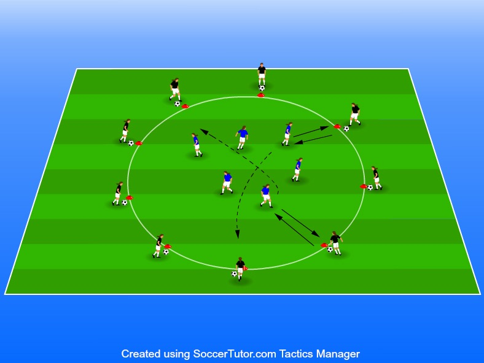

Motoch medtagningar, passningar och vändningar.
Anpassa cirkelns storlek så att
10 – 30 spelare
hälften med boll längs med
Eventuellt en kvadrat av koner
Spelare utan boll visar var och när passningen ska komma, • hälften med boll längs med cirkeln, hälften utan boll inne i utför angivet moment och spelar tillbaka bollen. cirkeln.
Byt uppgifter efter ca 90 sekunder • Eventuellt en kvadrat av koner mitt i cirkeln till vilken spelarna 3. Se till att kommunikationen är i fokus måste löpa för att sedan få
Timing i passningar och kast för att hålla hög kvalité i övningen möta bollhållare igen. VARIATIONER • Ta emot med ena foten, spela tillbaka med den andra. • Ta emot med insidan/utsidan, vänd upp, driv bollen mot mitten, vänd med t ex utsidesvändningen och spela tillbaka bollen. • Tillbakaspel på ett tillslag med insidan. • Bollhållaren kastar bollen: Ta emot med bröst och spela tillbaka på volley eller efter marken. • På samma sätt med lår och huvud. • Tillbakaspel direkt med huvud, bröst, axel, fotens insida och vrist på volley.